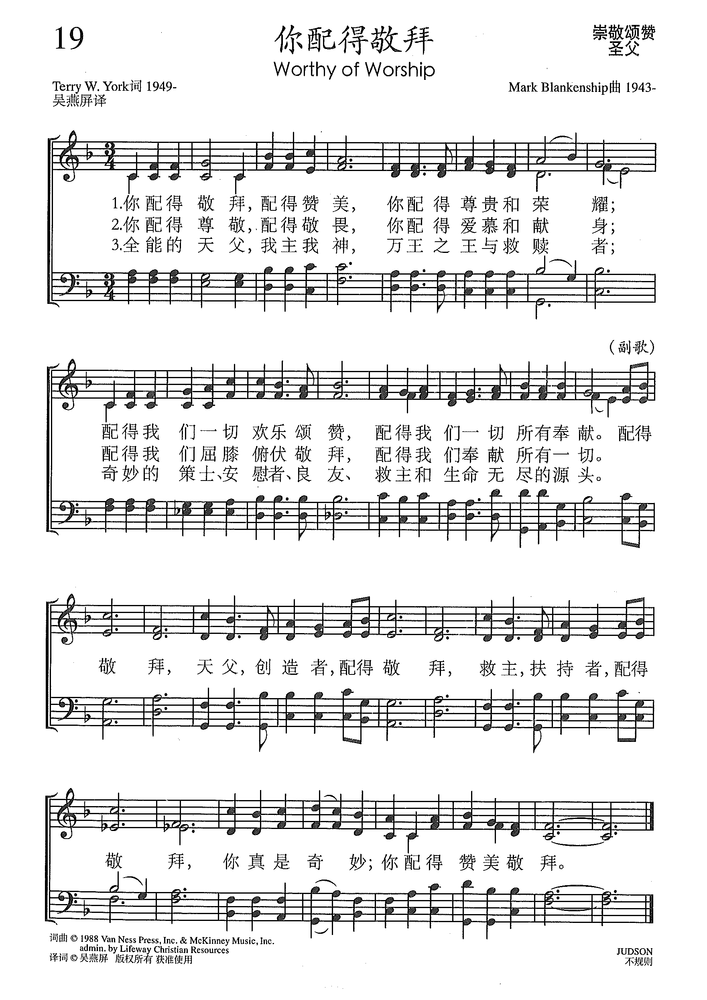

1334 Worthy of Worship _Blankenship
¡´
§A°t±o·q«ô
|
¡@ |
¡@ |
Stanza 1
Worthy of worship, worthy of praise,
worthy of honor and glory;
worthy of all the glad songs we can sing,
worthy of all of the offerings we bringStanza 2
Worthy of reverence, worthy of fear,
worthy of love and devotion;
worthy of bowing and bending of knees,
worthy of all of this and added to these¡K
Stanza 3
Almighty Father, Master and Lord,
King of all kings and Redeemer,
Wonderful Counselor, Comforter Friend,
Savior and Source of our life without end.
Refrain
You are worthy, Father, Creator.
You are worthy, Savior, Sustainer.
You are worth
worthy of worship and praise.
¡@ |
1¡B§A°t±o·q«ô¡A°t±o赞¬ü¡A§A°t±o´L贵©M荣Ä£¡F
°t±o§Ú们¤@¤Á欢乐颂赞¡A°t±o§Ú们¤@¤Á©Ò¦³©^献¡C
2¡B§A°t±o´L·q¡A°t±o·q¬È¡A§A°t±o爱¼}©M献¨¡F
°t±o§Ú们©}½¥Á¥ñ·q«ô¡A°t±o§Ú们©^献©Ò¦³¤@¤Á¡C
3¡B¥þ¯àªº¤Ñ¤÷¡A§Ú¥D§Ú¯«¡AÉE¤ý¤§¤ýÉO±Ï赎ªÌ¡F
©_§®ªºµ¦¤h¡B¦w¼¢ªÌ¡B¨}¤Í¡B±Ï¥D©M¥Í©R无尽ªº·½头¡C
¡]°Æºq¡^
°t±o·q«ô¡A¤Ñ¤÷¡A创³yªÌ¡A
°t±o·q«ô¡A±Ï¥D¡A§ß«ùªÌ¡A
°t±o·q«ô¡A§A¯u¬O©_§®¡F
§A°t±o赞¬ü·q«ô¡C
¡@ |
|

¡´
https://www.xueshengshi.com/?p=12552 ¡@ |
|
¡@ |
¡@ |
https://hymnary.org/person/York_Terry
. Terry W. York is Professor of
Christian Ministry and Church Music at Baylor University¡¦s George W. Truett
Theological Seminary. He joined the faculty in 1998 after serving three years as
the Associate Pastor of Park Cities Baptist Church in Dallas, TX. He received
the Bachelor of Arts degree from California Baptist University and his Master of
Church Music and Doctor of Musical Arts degrees from New Orleans Baptist
Theological Seminary.
He has been Minister of Music in
churches in California and Arizona. From 1984-1995 he served at the Baptist
Sunday School Board (now LifeWay Christian Resources) in Nashville, TN.
½Õ¦W:
JUDSON
Blankenship, Mark 57
Worthy of
worship, worthy of praise
https://www.goldenlampstand.org/glb/read.php?GLID=07406
¤@¡D¹|Æg³Ð³y
¡@¡@¡§¸t«v¡I¸t«v¡I¸t«v¡I¥D¯«¬O©õ¦b¤µ¦b¥H«á¥Ã¦bªº¥þ¯àªÌ¡K§Ú̪º¥D¡A§Ú̪º¯«¡A§A¬O°t±oºaÄ£´L¶QÅv¬`ªº¡A¦]¬°§A³Ð³y¤F¸Uª«¡A¨Ã¥B¸Uª«¬O¦]§Aªº¦®·N³Q³Ð³y¦Ó¦³ªº¡C¡¨¡]±Ò¥|¡G8¡A11¡^
¡@¡@±Ò¥Ü¿ý¤¤¦³³\¦hªº¸t¼Ö·q«ô¡A³o¬O¬ù¿«¦bÆFùجݨ£ªº²Ä¤@¦¸¤Ñ¤Wµ¼Ö·|¡A¥Dnªº°Ñ»PªÌ¬O¥|¬¡ª«©M¤G¤Q¥|¦ìªø¦Ñ¡C¥L̹|Ægªº¹ï¶H¬O¤÷¡A¤l¡A¸tÆF¡Cºq¹|ªºÃD¥Ø¬O¡§¯«ªº³Ð³y¡¨¡C¬Oªº¡A¯«ªº³Ð³y¹ï¤Ñ¨Ï¡A¸Uª«¡A¤×¨ä¬O¤H¡A¬O¦óµ¥ªº«n©M¦³·N¸q¡C¨S¦³³Ð³y¡A§ÚÌ´N¤£¦s¦b¡A«K½Í¤£¤W¥ô¦óªF¦è¤F¡C
¤G¡D¹|Æg¯Ì¦Ï
¡@¡@¡§§A°t®³®Ñ¨÷¡A°t´¦¶}¤C¦L¡F¦]¬°§A´¿³Q±þ¡A¥Î¦Û¤vªº¦å±q¦U±Ú¦U¤è¡A¦U¥Á¦U°ê¤¤¶R¤H¨Ó¡A¥s¥LÌÂk©ó¯«¡A¤S¥s¥L̦¨¬°°ê¥Á¡A§@²½¥q¡AÂk©ó¯«¡A¦b¦a¤W°õ´x¤ýÅv¡K´¿³Q±þªº¯Ì¦Ï¬O°t±oÅv¬`¡AÂ×´I¡A´¼¼z¡A¯à¤O¡A´L¶Q¡AºaÄ£¡A¹|Ægªº¡K¦ýÄ@¹|Æg¡A´L¶Q¡AºaÄ£¡AÅv¶Õ³£Âkµ¹§¤Ä_®yªº©M¯Ì¦Ï¡Aª½¨ì¥Ã¥Ã»·»·¡I¡¨¡]±Ò¤¡G9-13¡^
¡@¡@¬ù¿«¤S¬Ý¨£¤Ñ¤Wªº¤@Ó·q«ô¡A³o¦¸°Ñ»PªÌ¡A°£¤F¬¡ª«¡Aªø¦Ñ¡AÁÙ¦³³\¦h¤Ñ¨Ï¦b©P³ò¡A§ó¦³²³«H®{©M¤@¤Á³Q³y¤§ª«¡C´«¨¥¤§¡A³o¬O¾ãÓ¦t©zªºÆg¬ü¤j·|¡C¹ï¶H¬O¯Ì¦Ï¡A´N¬O±Ï®¦¡C
¤T¡D¹|Æg±Ï®¦
¡@¡@¡§Ä@±Ï®¦Âk»P§¤¦bÄ_®y¤W§Ú̪º¯«¡A¤]Âk»P¯Ì¦Ï¡KªüÌ¡I¹|Æg¡AºaÄ£¡A´¼¼z¡A·PÁ¡A´L¶Q¡AÅv¬`¡A¤j¤O¡A³£Âk»P§Ú̪º¯«¡Aª½¨ì¥Ã¥Ã»·»·¡CªüÌ¡I¡¨¡]±Ò¤C¡G9-12¡A15-18¡^
¡@¡@³o¦¸ºq¹|¤j·|¡A¥ÑµLªk¼Æ±o¹L¨Óªº¤H¼Æ°Ñ¥[¡A¥L̨¬ï¥Õ¦ç¡A¤â®³´Ä¾ðªK¡A¨Ó¹|Æg¨º³]¥ß¨Ã¦¨¥þ±Ï®¦ªº¡C³o¨Ç¬ï¥Õ¦çªº¬O½Ö¡A¬O±qþùبӪº¡H¬O±q¤j±wÃø¤¤¥X¨Óªº¡A´¿¥Î¯Ì¦Ïªº¦å¡A§â¦ç»n¬~¥Õ²b¤F¡C©Ò¥H¥L̦b¯«Ä_®y«e¡A±Þ©]¦bÍ¢·µ¤¤¨Æ©^Í¢¡C§¤Ä_®yªºn¥Î±b¹õÂЧȥLÌ¡C¥L̤£¦A°§¡A¤£¦A´÷¡A¤éÀY©Mª¢¼ö¡A¤]¥²¤£¶Ë®`¥LÌ¡A¦]¬°Ä_®y¤¤ªº¯Ì¦Ï¥²ªª¾i¥LÌ¡A»â¥L̨ì¥Í©R¤ôªº¬u·½¡C¯«¤]¥²À¿¥h¥L̤@¤Áªº²´²\¡C
¡@¡@«¢§Q¸ô¨È¡IÄ@¯«§â§Ú̱a¶i¨º¹|ÆgùØ¡I
¥|¡D¹|Æg¥ß°ê
¡@¡@¡§¥@¤Wªº°ê¡A¦¨¤F§Ú¥D©M¥D°ò·þªº°ê¡C¥Ln§@¤ý¡Aª½¨ì¥Ã¥Ã»·»·¡C¡K©õ¦b¤µ¦bªº¥D¯«¡X¡X¥þ¯àªÌ°Ú¡I§ÚÌ·PÁ§A¡I¦]§A°õ´x¤jÅv§@¤ý¤F¡C¥~¨¹µo«ã¡A§Aªº©Á«ã¤]Á{¨ì¤F¡F¼f§P¦º¤Hªº®ÉÔ¤]¨ì¤F¡F§Aªº¹²¤H²³¥ýª¾©M²³¸t®{¡A¤Z·q¬È§A¦Wªº¤H³s¤j±a¤p±o½à½çªº®ÉÔ¤]¨ì¤F¡F§A±ÑÃa¨º¨Ç±ÑÃa¥@¬É¤§¤Hªº®ÉÔ¤]´N¨ì¤F¡C¡¨¡]±Ò¤@¤@¡G15-18¡^
¡@¡@»P±Ð·|¹ï¼ÄªºÃ~¥ÑµL©³§|¤W¨Ó¡A»P¨â¦ì¨£ÃÒ¤H¥æ¾Ô¡F³Ó¤F¡A¤S§â¥Ḻþ¤F¡A¦a¤Wªº¤H¦]¦¹Åw³ß§Ö¼Ö¡AÃJ°e§ª«¡C¦ý¬O³o¤G¤H´_¬¡¡A¾r¶³¤W¤Ñ¡A«K¦³¨aÃøÁ{¨ì¦a¤Wªº¤H¡C¦¹®É¤ÑÃý¤j¤jÅT°_¡C¶Ç¨Ó°ò·þ«Ø°êªº³ß°T¡C®@¡I¯«ªº¤èªk»P³~®|¨£©ó¨üW©M³Q®`¡C
¤¡D¹|Æg±o³Ó
¡@¡@¡§§Ú¯«ªº±Ï®¦¡A¯à¤O¡A°ê«×¡A¨Ã¥L°ò·þªºÅv¬`¡A²{¦b³£¨Ó¨ì¡C¦]¬°¨º¦b§Ú̯«±«e±Þ©]±±§i§Ú̧̥Sªº¡A¤w¸g³QºL¤U¥h¤F¡C§Ì¥S³Ó¹L¥L¡A¬O¦]¯Ì¦Ïªº¦å©M¦Û¤v©Ò¨£ÃÒªº¹D¡A¥LÌÁö¦Ü©ó¦º¡A¤]¤£·R±¤©Ê©R¡C©Ò¥H½Ñ¤Ñ©M¦í¦b¨ä¤¤ªº¡A§A̳£§Ö¼Ö½}¡C¡¨¡]±Ò¤@¤G¡G10-12¡^
¡@¡@±o³Ó¡A¬O·í¤µ¨CÓ°ò·þ®{©Ò±¹ïªº¬D¾Ô¡A¤]¬O¦U¤H³Ì§Æ±æ´x´¤ªº¡C±Ò¥Ü¿ý²Ä¤Q¤C³¹¤Q¥|¸`»¡¡G¡§¡K¯Ì¦Ï¥²³Ó¹L¥LÌ¡A¦]¬°¯Ì¦Ï¬O¸U¥D¤§¥D¡A¸U¤ý¤§¤ý¡C¦P着¯Ì¦Ïªº¡A´N¬O»X¥l³Q¿ï¦³©¾¤ßªº¡A¤]¥²±o³Ó¡C¡¨
¡@¡@·PÁÂ¥D¡I§Ṳ́]¥²±o³Ó¡A¦]¬°§Ú̦P着¯Ì¦Ï¡F§Ú̬O»X¥l³Q¿ï¦³©¾¤ßªº¡Cnª¾¹D¤£¬O©Ò¦³»X¥lªº¡A´N¬O±o³Óªº¡F»X¥lªº¦h¡A³Q¿ïªº¤Ö¡A¦³©¾¤ßªº§ó¤Ö¡C¦P着¯Ì¦Ï¦Ó±o³Óªº¡A¬O¦³©¾¤ßªº¡F¬O§ÚÌn¨D¥D¦¨¥þªº¡C
¤»¡D¹|Ægªº·sºq
¡@¡@¡§§Ú¤SÆ[¬Ý¡A¨£¯Ì¦Ï¯¸¦b¿ü¦w¤s¡A¦P¥L¤S¦³¤Q¥|¸U¥|¤d¤H¡A³£¦³¬°Í¢ªº¦W¡A©MÍ¢¤÷ªº¦W¼g¦bÃB¤W¡C§ÚÅ¥¨£±q¤Ñ¤W¦³Ánµ¡A¹³²³¤ôªºÁnµ¡A©M¤j¹pªºÁnµ¡C¨Ã¥B§Ú©ÒÅ¥¨£ªº¦n¹³¼uµ^ªº©Ò¼uªºµ^Án¡C¥L̦bÄ_®y«e¡A¨Ã¦b¥|¬¡ª«©M²³ªø¦Ñ«e°Ûºq¡A§Ï©»¬O·sºq¡C°£¤F±q¦a¤W¶R¨Óªº¨º¤Q¥|¸U¥|¤d¤H¥H¥~¡A¨S¦³¤H¯à¾Ç³oºq¡C³o¨Ç¤H¥¼´¿ªg¬V°ü¤k¡A¥LÌì¬Oµ£¨¡C¯Ì¦ÏµL½×©¹¨ºùØ¥h¡A¥L̳£¸òÀHÍ¢¡C¥L̬O±q¤H¶¡¶R¨Óªº¡A§@ªì¼ôªºªG¤lÂk»P¡@¯«©M¯Ì¦Ï¡C¦b¥L̤f¤¤¹î¤£¥XÁÀ¨¥¨Ó¡A¥L̬O¨S¦³·å²«ªº¡C¡¨¡]±Ò¤@¥|¡G1-5¡^
¡@¡@¦b©Ò¦³±Ò¥Ü¿ýªº·q«ôùØ¡A¬ù¿«°ß¤@¦b³oùبS¦³°O¿ýºqµü¡C¦ý¸tÆF«o¥s¥L¸Ô²Ó¦a»¡¥X¡A¬O¬Æ»ò¼Ëªº¤H¤~¯à°Ñ»P¸t¼Ö·q«ô¡C³oµ¹¤F§Ú̫ܤjªº±Ð¾É¡C§Ú̲פé´M¨Dµ¼Öªº¬üÄR¡A®ÄªG¡A¥\¥Î¡A¦±µü¯«¾Ç«ä·Q¡A¥Î¤ßÆF¡A®©©Êºq°Û¡K³oùØ«o¤@·§¤£´£¡A¥u»¡¥X°Ûºqªº¡G
¡@¡@1. n¾Ç¡G°£¤F¡K¨S¦³¤H¯à¾Ç¡]±Ò¤@¥|¡G3¡^¥i¨£¤£¬O¤£¾Ç´N°Û¹|¡C³o¬O¸t¸g¤@³eªº±Ð¾É¡]¥N¤W¤@¤¡G22¤W¡^¡C
¡@¡@2. ´¿³Q¯Ì¦Ï¶R¨Ó¡AÃB¤W¦³¦Wªº¡]±Ò¤@¥|¡G1¡A4¡^¡G¬O®¦»â¤F¯Ì¦Ï©Ò¥Iªº¥N»ùªÌ¡C
¡@¡@3. µ£¨¡G¥u·q«ô¯«¡A¦³²M¼äªº¤ß¡]ªL«á¤@¤@¡G2¡F´£«á¤@¡G3¡^
¡@¡@4. ¸òÀH¯Ì¦Ï¡G¯Ì¦Ïªº¸}ÂÜ¡A¬O¨üW¶¶ªAªº¸}ÂÜ¡F¥ý¯Ì¦Ï«á·à¤lªº¸}ÂÜ¡C
¡@¡@5. Âk»P¯«©M¯Ì¦Ï¡G§¹¥þ©^Äm¡]ù¤@¤G¡G1¡^
¡@¡@6. ¤£¥XÁÀ¨¥¡G¡]¬ù³ü¤@¡G6¡A¤G¡G4¡A¤T¡Gl8¡A¥|¡G20¡^
¡@¡@7. ¨S¦³·å²«¡GÅý¥D§¹¦¨±Ï®¦¦bÍ¢¨¤Wªº¤H¡]µS¡G24¡^
¤C¡D¹|Æg¤j¯à
¡@¡@¡§¥D¯«¡K¥þ¯àªÌ°Ú¡A§Aªº§@¬°¤j«v¡I©_«v¡I¸U¥@¡]¥@©Î§@°ê¡^¤§¤ý°Ú¡A§Aªº¹D³~¸q«v¡I¸Û«v¡I¥D°Ú¡A½Ö´±¤£·q¬È§A¡A¤£±NºaÄ£Âk»P§Aªº¦W©O¡H¦]¬°¿W¦³§A¬O¸tªº¡C¸U¥Á³£n¨Ó¦b§A±«e·q«ô¡A¦]§A¤½¸qªº§@¬°¤w¸gÅã¥X¨Ó¤F¡C¡¨¡]±Ò¤@¤¡G2-4¡^
¡@¡@¸g¤å»¡¡G¡§§Ú¬Ý¨£§Ï©»¦³¬Á¼þ®ü¡A¨ä¤¤¦³¤õÄeÂø¡C¤S¬Ý¨£¨º¨Ç³Ó¤FÃ~©MÃ~ªº¹³¡A¨Ã¥L¦W¦r¼Æ¥Øªº¤H¡A³£¯¸¦b¬Á¼þ®ü¤W¡A®³着¯«ªºµ^¡A°Û¡@¯«¹²¤H¼¯¦èªººq¡A©M¯Ì¦Ïªººq¡C¡¨¼¯¦èªººq°O©ó¥X®J¤Î°O²Ä¤Q¤³¹¡C¦pªG§A²ÓŪ«Kª¾¹D¦¹¦±®Ú¥»¤£¹³¼¯¦èªººq¡]¥i¯à°£¤F¥X¤@¤¡G11¡^¡C¸t¸g¤S§â¥¦©R¦W¬°¡§¯Ì¦Ïªººq¡¨¡C³o¥s§Ú̬ݨ£¡A¼¯¦è©Ò°µ¤@¤Á¬O¹wªí¯Ì¦Ïªº±Ï®¦¡C©Ò¥H³o¬O±Ï®¦¤§ºq¡C·PÁ¯«¡I±Ï®¦´N¬O§ÚÌÆg¹|ªº¥DÃD¡I
¤K¡D¥Ã»·ªº¹|Æg
¡@¡@¡§«¢§Q¸ô¨È¡I±Ï®¦¡AºaÄ£¡AÅv¯à¡A³£ÄÝ¥G§Ú̪º¯«¡IÍ¢ªº§PÂ_¬O¯u¹ê¤½¸qªº¡A¦]Í¢§PÂ_¤F¨º¥Î²]¦æ±ÑÃa¥@¬Éªº¤j²]°ü¡A¨Ã¥B¦V²]°ü°Q¬y¹²¤H¦åªº¸o¡Aµ¹¥L̦ùÞ¡C¡K«¢§Q¸ô¨È¡I¿N²]°üªº·Ï©¹¤W«_¡Aª½¨ì¥Ã¥Ã»·»·¡C¡K«¢§Q¸ô¨È¡I¦³Ánµ±qÄ_®y¥X¨Ó»¡¡G¯«ªº²³¹²¤Hþ¡A¤Z·q¬È¥Lªº¡AµL½×¤j¤p¡A³£nÆg¬ü§Ú̪º¯«¡I¡K«¢§Q¸ô¨È¡I¦]¬°¥D§Ú̪º¯«¡A¥þ¯àªÌ¡A§@¤ý¤F¡C§ÚÌnÅw³ß§Ö¼Ö¡A±NºaÄ£Âkµ¹Í¢¡A¦]¬°¯Ì¦Ï±B°ùªº®ÉÔ¨ì¤F¡A·s°ü¤]¦Û¤v¹w³Æ¦n¤F¡C´N»X®¦±o¬ï¥ú©ú¼ä¥Õªº²Ó³Â¦ç¡A³o²Ó³Â¦ç´N¬O¸t®{©Ò¦æªº¸q¡C¡¨¡]±Ò¤@¤E¡G1-8¡^
¡@¡@³o¬O¸s²³¦b¤Ñ¤WªºÆg¬ü¤j·|¡A¬O¤£¦´ªº¥Ã»·Æg¬ü¡A¦]¬°¯«¦æ¤F§PÂ_¡A¦ùÞ¡A²]°ü³Q¿N¡A¯Ì¦Ï±B°ùªº®ÉÔ¨ì¤F¡A©Ò¥H¾ãÓ¦t©z¶i¤J·s¤Ñ·s¦a¡A¤Hn¶¼¥ÑÄ_®y¬y¥X¨Óªº¥Í©Rªe¤ô¡A¦Y¥Í©R¾ðªº¤Q¤G¼ËªG¤l¡A¬¡¦b¥Ã»·ªº¹|Æg¡A·q«ô¡A¨Æ©^ùØ¡C¥D°Ú¡IÄ@§A§Ö¨Ó¡I
¡@
·q«ô©M¹|Æg ±Ò4;10-11
¡K10¨º¤G¤Q¥|¦ìªø¦Ñ´NÁ¥ñ¦b§¤Ä_®yªº±«e¡A·q«ô¨º¬¡¨ì¥Ã¥Ã»·»·ªº¡A¤S§â¥L̪º«a°Ã©ñ¦bÄ_®y«e¡A»¡¡G
11¡u§Ú̪º¥D¡A§Ú̪º¯«¡A§A¬O°t±oºaÄ£¡B´L¶Q¡BÅv¬`ªº¡A¦]¬°§A³Ð³y¤F¸Uª«¡A¨Ã¥B¸Uª«¬O¦]§Aªº¦®·N³Q³Ð³y¦Ó¦³ªº¡C¡v
¡@
|
Short Name: |
Terry W. York |
|
Full Name: |
York, Terry W., 1949- |
|
Birth Year: |
1949 |
Terry W. York is Professor of Christian Ministry and Church Music at Baylor
University¡¦s George W. Truett Theological Seminary. He joined the faculty in
1998 after serving three years as the Associate Pastor of Park Cities Baptist
Church in Dallas, TX. He received the Bachelor of Arts degree from California
Baptist University and his Master of Church Music and Doctor of Musical Arts
degrees from New Orleans Baptist Theological Seminary.
He has been Minister of Music in churches in California and Arizona. From
1984-1995 he served at the Baptist Sunday School Board (now LifeWay Christian
Resources) in Nashville, TN. His duties there included being the Project
Coordinator for The Baptist Hymnal, 1991. In all, Dr. York has published more
than 40 hymns including the well-known Worthy of Worship. His hymn Give Us
Courage was commissioned by the Truett Seminary administration and approved by
the Truett Seminary faculty as the official Seminary Hymn in 2006. In addition
to his hymns, Dr. York has published more than 60 choral anthem texts set by
composers such as Bob Burroughs, David Danner, Tom Fettke, Benjamin Harlan,
Mary McDonald, Earlene Rentz, David Schwoebel, Joseph Martin, Vicki Hancock
Wright, Taylor Scott Davis, and Dan Goeller.
The Worship Matrix, co-authored with David Bolin (Celebrating Grace, Inc.,
2010), is the fourth of Dr. York¡¦s books to have been translated into Chinese.
In June 2008 it was his privilege to be one of two featured plenary speakers
at The World Association of Chinese Church Musicians¡¦ biannual conference
which met in Kuching, Malaysia. In June 2009, the Baptist Church Music
Conference, meeting in Nashville, TN, gave Dr. York the W. Hines Sims Award,
its most prestigious recognition.
Many of Dr. York¡¦s anthems, books, hymns, sermons, essays, and poems can be
accessed on the website he shares with David Bolin, www.textandtune.com.
Dr. York and his wife, Janna, have two children and three grandchildren.
--Email from Terry W. York to Tina Schneider, 2 May 2014. DNAH
Archives
¡@
https://medium.com/congregational-song/worthy-of-worship-9c58b08e4a31
This fairly young hymn, in comparison to a few 17th century hymns in The
Baptist Hymnal, 1991, was written by Terry W. York and put to music by Mark
Blankenship in 1988.
The hymn is not only a call to worship but answers the question of why we
worship? He is worthy, yes, but what makes him worthy? It is because of who He
is, what He has done, and will do in our lives as children of the Living God.
This is a hymn of worship and education with use of non-inclusionary language;
the call for human response to the nature of God, the doctrine the Trinity, and
the text ¡§glad songs we sing¡¨ is used as a generic term for ¡§all creation¡¨
(Phil. 2:9 ¡§. . . let every knee bow . . .¡¨).
Great is the Lord and Most Worthy of Praise
The first stanza is more of a broad description of the physical type of worship
we offer to God; praises, glad songs, honor, glory and bringing of all of the
offerings. The scriptural reference of Psalm of Praise, Psalm 145:3 ¡§Great is
the Lord and most worthy of praise; his greatness no one can fathom.¡¨ God¡¦s
greatness is so unfathomable that can never run out of reasons to praise him.
Psalms continues to say ¡§The Lord is gracious and compassionate . . . The Lord
is good to all . . . The Lord is faithful . . . the Lord uphold all those who
fall . . . The Lord is righteous . . . The Lord is near . . .The Lord watches
over all who love him.¡¨
Every Tongue Shall Confess
The second stanza addresses the posture of the worshipers heart; reverent,
fearful, love, devotion, bowing and bended knees. Philippians 2:9¡V11 says
¡§Therefore God exalted him to the highest place and gave him the name that is
above every name, that at the name of Jesus every knee should bow, in heaven and
on earth and under the earth, and every tongue confess that Jesus is Lord, to
the glory of God the Father.¡¨
Wonderful Counselor, Mighty God
The third stanza comes from Isaiah 9:6 about the prophecy of the Child to be
born and the names he will be called; Wonderful Counselor, Mighty God,
Everlasting Father, Prince of Peace.
Poetic Meter, Devices, & Hymnic Meter
This hymn embraces the use of anaphora; repeating the word ¡§worthy¡¨ at the
beginning on successive lines and alliteration in the first two stanzas: ¡§Worthy
of worship, worthy of praise.¡¨
It also arranges the verses in order of intensity;
verse one: worthy of worship,
verse two: worthy of Love, and
lastly the refrain builds into the last verse:
¡§Almighty Father, Master and Lord¡¨ which is an itemization, or listing of the
names of God.
It¡¦s hymnic meter is 9.8.10.10. with refrain and categorized as an Irregular
Meter in contrast to Long Meter (8.8.8.8.) or Short Meter (6.6.8.6.).
Congregational Participation
¡§Worthy of Worship¡¨ is suitable for congregational singing because it is
balanced with repetitive phrases and saturated with the doctrine of the Trinity.
The refrain alone compacts the theme of the hymn, however the stanzas take the
congregation and the individual worshiper on a journey of of reflection and
response to God the Father, God the Son, and God the Holy Spirit. Below is a
choral arrangement by Tom Fettke and Thomas Grassi and lyrics.
Lyrics
Stanza 1
Worthy of worship, worthy of praise,
worthy of honor and glory;
worthy of all the glad songs we can sing,
worthy of all of the offerings we bring
Stanza 2
Worthy of reverence, worthy of fear,
worthy of love and devotion;
worthy of bowing and bending of knees,
worthy of all of this and added to these¡K
Stanza 3
Almighty Father, Master and Lord,
King of all kings and Redeemer,
Wonderful Counselor, Comforter Friend,
Savior and Source of our life without end.
Refrain
You are worthy, Father, Creator.
You are worthy, Savior, Sustainer.
You are worth
worthy of worship and praise.
https://seelemag.com/blog/unpacking-the-hymn-worthy-of-worship-cportee
worthy-of-worship-seele-magazine-cassandra-portee.jpg
Today¡¦s Friday Post is written by elementary music teacher Cassandra Portee, who
unpacks the hymn Worthy Of Worship. If you missed it, catch her recent unpacking
of the hymn ¡¥It Is Well With My Soul¡¦.
¡§Therefore, God exalted Him to the highest place and gave Him the name that
is above every name that at the name of Jesus every knee should bow in heaven
and on earth, and under the earth, and every tongue confess that Jesus is Lord,
to the glory of God the Father.¡¨
¡X PHILIPPIANS 2:9-11
The hymn ¡§Worthy of Worship¡¨ written by Terry W. York, and set to music by Mark
Blankenship in 1988 became one of my favorite hymns as an adult while singing in
the church choir. The lyrics caught my attention and outlined why God is worthy
of all of our praises.
We can say we know God is worthy of our praise, but can we explain why He is
worthy of our praise? Knowing why He is worthy of praise takes us into a deeper
intimate relationship with God. When we come to understand this, we will have
the faith and strength to overcome any darts the devil throws at us. It is not
just enough to say He is worthy of our praise, we are to praise Him each and
every day no matter what our circumstances may be.
Verse 1 gives us different reasons for praising God in our worship--we give
Him glory, honor, and bringing our offerings. God remains faithful to us all the
time.
Verse 2 expresses that every knee shall bow at the name of Jesus, and respect
who He is, and the devotion He gives us daily.
Verse 3 describes the characteristics of Jesus. He is a Wonderful Counselor,
a Comforting Friend, King of all earthly kings, Redeemer, Savior, and Provider.
In the Refrain it is stated three times at the beginning of each line that
Jesus is worthy. He is our Creator, Sustainer, Father, Savior. No matter what we
are going through He is right by our side. He is with us through the good times,
and He is with us through our challenges.
We must always remember, He does not want us to only remember Him during the
trials we experience. He wants us to remember Him during the good times as well.
As my mother used to say: ¡§do not depend on Him some of the time, depend on Him
all of the time.¡¨ When we wake up in the morning, He is worthy of praise. When
we have food to eat, clothes to wear, a car to drive, pay our bills, dress
yourself He is worthy. As a child I remember the older adults saying when you
can wake up with the blood still running warm through your veins, and you are
clothed in your right mind, HE IS WORTHY OF OUR WORSHIP and PRAISE.